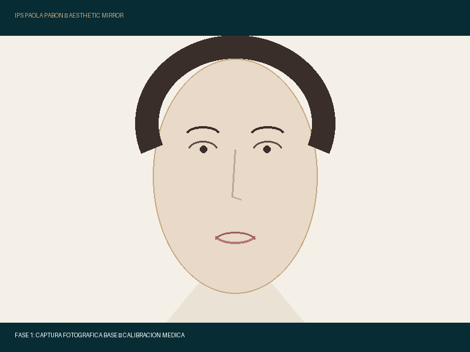
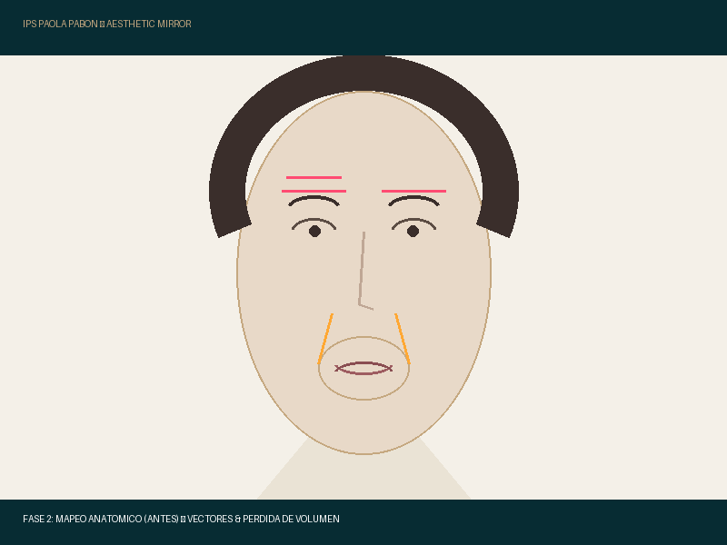
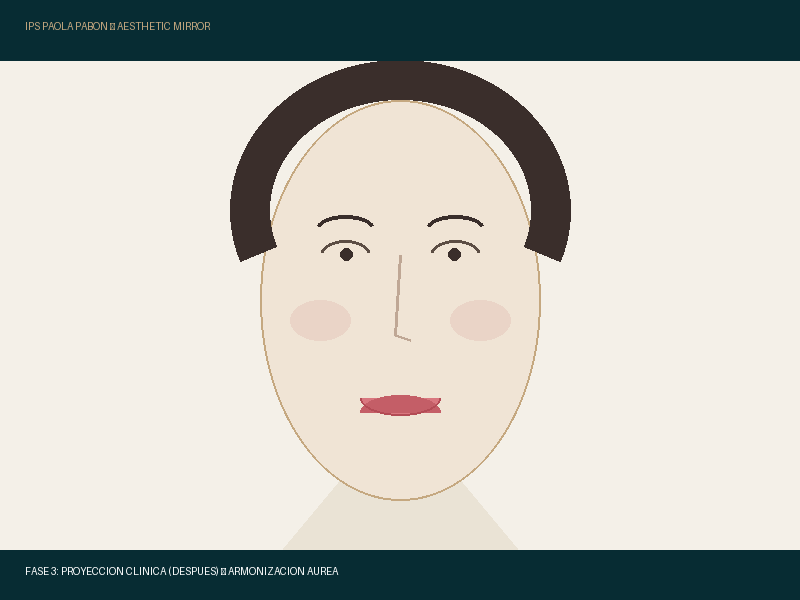

La tecnología visual en iPad que derriba el miedo a los inyectables durante la consulta médica y genera al instante un Plan Estético Oficial en PDF enviado al WhatsApp de la paciente con la imagen proyectada.
ANÁLISIS EN 3 FASES DE CABINA
Del Diagnóstico Facial a la Simulación Ética

Fase 1
1. Captura de Rostro Base
Fotografía clínica de alta resolución tomada en cabina con el iPad Pro de la Dra. Paola bajo luz médica calibrada.

Fase 2
2. Análisis Anatómico (Antes)
Detección por IA de pérdida de soporte en pómulos, asimetrías del arco de cupido y líneas de tensión en tercio superior.

Fase 3
3. Simulación Ética (Después)
Previsualización del resultado con volumen controlado («Armonizarte, no cambiarte») para que la paciente decida con certeza.
EL ENTREGABLE MEMORABLE EN CABINA
Generador de Plan Clínico Estético en PDF
Al finalizar la consulta, el sistema genera automáticamente la ficha médica con los insumos prescritos, las fotos del análisis y los cuidados posteriores.
IPS DRA. PAOLA PABÓN
MEDICINA ESTÉTICA & SPA • SEDE YUMBO
Calle 5 #7-24, Puerto Isaacs • Registro Seccional de Salud
Ficha N°: PP-2026-089
Fecha: 3 de Octubre, 2026
Paciente: Carolina Mendoza Ospina
Edad: 36 años
Objetivo: Bioestimulación & Firmeza Facial
Médica Tratante: Dra. Paola Andrea Pabón
Proyección Facial Digital en Cabina (Antes vs. Después Proyectado):
Estado Inicial (Antes)
Proyección Armonizada (Después)
Protocolo Clínico Prescrito:
Procedimiento
Farmacología / Marca
Dosis / Viales
Bioestimulador Dérmico
Sculptra® (Galderma)
1 Vial (Dilución estandarizada)
Revitalización Celular
NCTF 135HA (Fillmed)
1 Sesión (Cortesía de Jornada)
Prevención Dinámica
Toxina Botulínica
30 Unidades (Frente y entrecejo)
Cuidados Inmediatos (Primeras 24 horas):
No realizar ejercicio de alto impacto. No exponerse a saunas o sol directo. Realizar masaje suave 5x5 (5 minutos, 5 veces al día durante 5 días) en zonas con bioestimulador. Control médico a los 15 días.